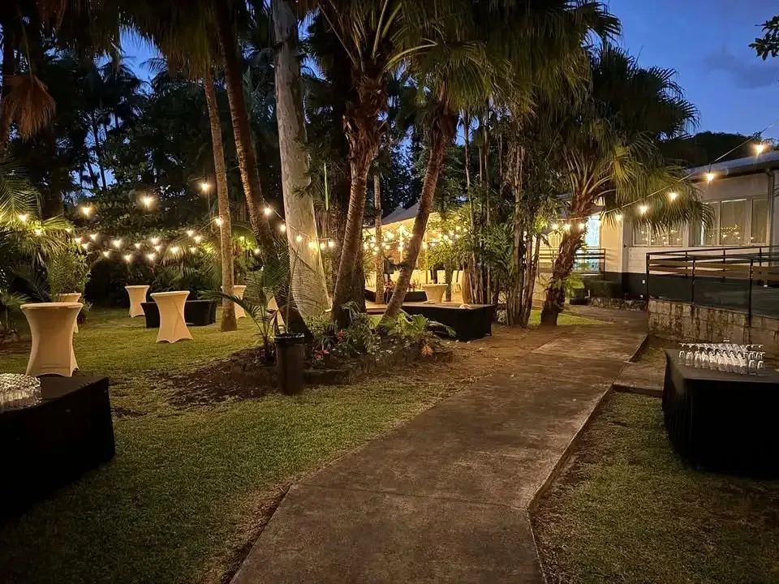
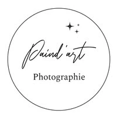
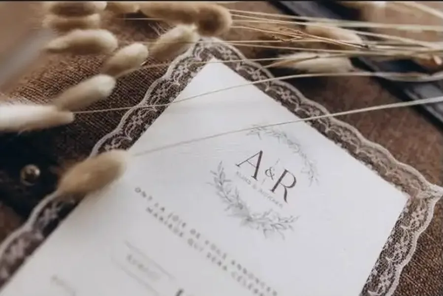
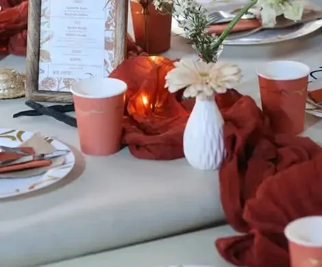
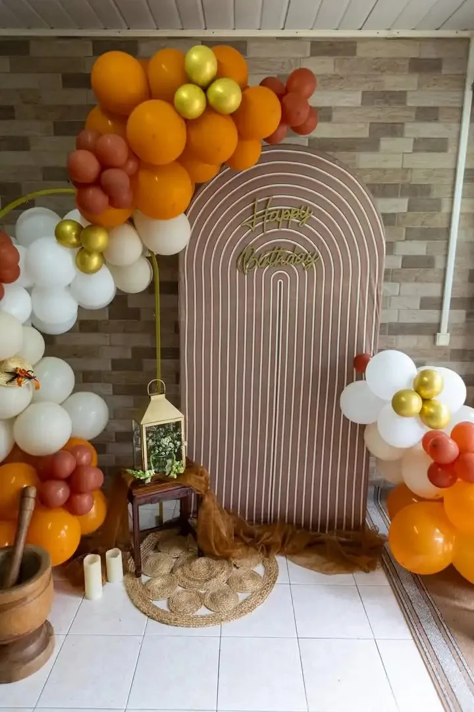
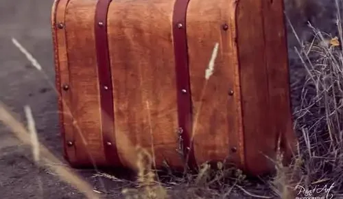

Mariage
Cérémonie, couple, famille : un reportage pensé comme une histoire, dans une ambiance romantique, profonde et naturelle.
« Votre mariage mérite des souvenirs impeccables. Vous avez un projet ? Parlons-en. »

Photographe · Sainte-Suzanne · La RéunionMariages & Fine Art. Un goût prononcé pour la simplicité, l'originalité et les émotions vraies : chaque instant capté avec délicatesse et sens artistique.
Basé à Sainte-Suzanne · séances jusqu'au Piton Maïdo
Derrière l'objectif, Damien Paindavoine, photographe passionné. Sa façon de travailler : la simplicité, l'originalité et les émotions vraies, avec un vrai sens du détail, de la lumière et de la mise en scène.
« Il y a une beauté particulière dans les coulisses : les mains qui ajustent, les idées qui prennent forme, les détails qui deviennent décor. »

Cérémonie, couple, famille : un reportage pensé comme une histoire, dans une ambiance romantique, profonde et naturelle.
« Votre mariage mérite des souvenirs impeccables. Vous avez un projet ? Parlons-en. »Un reportage photo d'1h30 pour garder ce moment précieux, avec un tirage 20×30 ou un livre photo 20×20 selon la formule.
« Des souvenirs doux et authentiques pour un moment précieux. »Les shootings en extérieur reprennent : chemins d'herbes dorées, lumière de fin de journée, et toute la famille réunie dans le cadre.
« Chaque famille a son histoire. Confiez-moi la vôtre : je la transformerai en images qui durent. »Des séances plus audacieuses : la robe de mariée au Piton Maïdo à l'aube, des shootings d'inspiration avec décor, faire-part et mise en scène.
« Nouvelle colorimétrie, nouvelle énergie, même passion. »Quelques images publiées sur la page Paind'Art : des lieux, des tables, des objets, toute l'atmosphère d'une journée avant que la fête commence.



← glissez →
« Un trash-the-dress très original, dans une lumière que seule La Réunion peut offrir. »
Rendez-vous au lever du jour, la robe de mariée face à l'horizon : une nouvelle colorimétrie, une lumière dorée, et des images qui ressemblent à un tableau.
Illustration
Aujourd'hui, c'est post-traitement du shooting d'inspiration.
Un modèle romantique naturel, pour un mariage champêtre chic ou bohème, avec 2 Oui For Event et Lylykréol, et une nouvelle direction artistique pour la saison.
Retour en image sur la prestation de ce premier week-end de juillet.
Arche, ballons, table dressée : la magie du décor se révèle, détail après détail.
Votre mariage mérite des souvenirs impeccables.
Lancement de l'offre spéciale mariage, du reportage baptême & communion, et retour des shootings famille en extérieur.
Une séance famille en extérieur, un portrait de couple, un souvenir pour les grands-parents : un cadeau qui se garde toute une vie, signé Paind'Art.
à offrir à ceux qu'on aime · Sainte-Suzanne & toute l'île
Damien vous répond sur WhatsApp pour composer le bon cadeau.
Mariage, baptême, famille ou séance Fine Art : un message suffit pour en parler ensemble et réserver votre date.
Basé à Sainte-Suzanne, dans l'Est de La Réunion, en séance dans toute l'île.